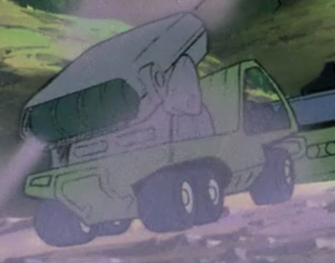

| Type 50 |
|
|  | |
General and Technical Data |
|
|
Unit type: armored car Armament: 1x 8-tube wire guided missile launcher |
|
| Technical and Historical Notes | |
| Replaced in the Federal Arsenal by the Fanfan, the Type 50 is now used primarily by the Colony Management Corporation, but also as a supplementary unit for the Riah Militia and the Lunar Management Company. Simply an armored car mounting an 8-tube missile launcher, the Type 50 is resistant to handheld firearms, but not against anti tank weaponry, let alone the weaponry of a mobile suit. |
 RPG quick stats sheet
RPG quick stats sheet